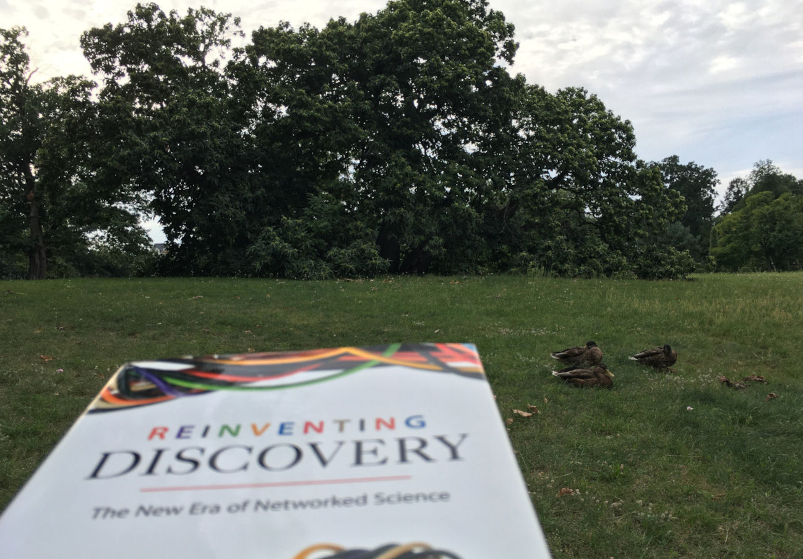

![]()

It is 100 days until COP28 in Dubai. The Global Stocktake, the process to assess progress towards the goals of the Paris Climate Change Agreement, is scheduled to take place every five years and for the first time during COP28.
Some questions and indicators one might ask about during such a Global Stocktake, or in fact constantly, when thinking about climate change, could be:
- What are global emissions levels?
- How far are we from 1.5 or 2.0°C?
- How big is the remaining carbon budget?
- When adding together climate plans of countries (NDCs), where do we end up?
When trying to look up an answer for questions like these, they can be surprisingly difficult to find given their importance for our common future. Of course answers exist, in academic publications, in reports like those from the IPCC, or in reports or websites from various governmental or non-governmental organizations. Few of them however are regularly updated and fully done reproducibly in the spirit of open science, where the latter would make it easier to achieve the former.
Polyclimate
The Polyclimate project is a place to think about how questions like the above could be approached using modern tools for collaboration, to discuss what are the barriers that so far prevented such collaboration from happening, and to hopefully kickstart some actual work on producing answers to these questions in a regularly updated, open, and inclusive way.
It is of course named after and inspired by the Polymath project. In 2009 Timothy Gowers asked in his blog the question:
The answer is of course yes, numerous publications and succesful proofs have emerged from the project and follow-ups. In the post he writes
“I’ve been thinking of doing this for a long time.”
So have I on doing this for some questions of climate science and when looking up whether someone had already used “Polyclimate” for this I was happily surprised to find some discussion in this blog. This went apparently nowhere, and, to be clear, I am not interested in using “collective intelligence” or the “power of the internet” to “move forward on the climate debate”. Nonetheless, there are some interesting observations made, for example Michael Nielsen commented on the idea of mass collaboration:
A crucial question about mass collaboration is when problems can be attacked using mass collaboration, and when it will fail. I believe the key question is whether the community involved in the collaboration has a “shared praxis” or not. By this, I mean a powerful set of shared techniques and agreed-upon methods of reasoning which all participants agree to use.
[…]
For climate change the issue of a shared praxis seems complicated. I think it’s pretty near a dividing line. Reading online discussions of climate, it’s obvious that many people don’t even share the same basic modes of reasoning: what one person counts as “evidence” is ignored by others, basic standards of logic are outright ignored, and so on.
I don’t think massive online collaboration is needed, but getting a number of researchers working together, which is larger than the usual teams collaborating on questions like the ones mentioned above could have tremendous benefits. There are many areas where finding the right specialist, for example with knowledge of some specific sector’s emission could be enabled by the internet much more likely than in traditional academic collaboration.
So this Polyclimate project is not about solving the “climate issue”. It is also not about the climate in urban systems which I discovered when searching for “polyclimate”:
Far more attached to the subject than Friedman, Schulze-Fielitz spent 20 years studying the air-conditioning of “urban systems.” His concept of “Polyclimate” went hand in hand with Raumstadt: to each activity its space and its climate. (Rouillard 2018)
I hope Polyclimate can move forward the way in which researchers work together on some of the grunt work, producing basic data sets and indicators which are crucial for all of climate science but due to various reasons are not done continuously in a fully open, collaborative manner. Certainly, one can learn from the successes in online collaboration in Mathematics.
Polymath
An article in Nature (unfortunately paywalled, but available online at the author’s website) summarizes the Polymath story and lines out ideas for other disciplines:
The ‘Polymath Project’ proved that many minds can work together to solve difficult mathematical problems. (Gowers and Nielsen 2009)
Building up a regularly updated global emissions or temperature dataset is of course quite different from finding a new proof, but there are many insights which can be adapted from the experiences of the Polymath projects.
In his book Reinventing Discovery Michael Nielsen argues that scientists are more likely to contribute to projects like Polymath or Galaxy Zoo where the final output is a classical output like a scientific paper compared to projects like GenBank or Wikipedia, where their expertise would be helpful as well but is not as incentivized (p.9, Nielsen 2011). In Polymath, papers were published under the pseudonym D. H. J. Polymath. I believe that publishing under pseudonym or as a working group is a critical component in getting collaborative and repeatedly updated climate science to work.
There are many challenges for any such project and it is quite interesting to go back through the archives of Timothy Gower’s blog for the Polymath category, read about the process, and find for example discussions on thread depth for the blog:
On the Polymath blog, a very high level of threading is allowed, with the result that the order of comments is very different from their chronological order. This makes it substantially harder to check what has been added recently than it would be if there were no threading. It’s not impossible, since one has a list of recent comments, but it does reduce the feeling of a polymathematical thought process unfolding over time. I know that there is disagreement about this, but I am going back to the view that there should be no threading at all, though I might be ready to compromise and have threading down to depth 1, with the understanding that it should be used for brief local replies only.
Where to start?
Polymath started and happened to a large part on blogs. Looking for a place where I could start thinking about these questions I settled on GitHub and set up the blog you are reading now using Quarto. The latter enables inclusion of mathematical citation, code execution and citations. Comments are enabled in the blog using GitHub’s discussion feature through Giscus. Next to code hosting GitHub also offers Wikis, project management, issue tracking, and automated code pipelines, which means pretty much all potential ingredients for such collaborative work are there. Further, quite a few of the people I could imagine contributing to such efforts are already actively doing science in the open on GitHub, so if you have an account there you are ready to comment and contribute.
For any work done in public there are concerns about trolls, here GitHub has features for limiting interaction. As on most social platforms there can be difficulties for people from countries under trade control regulations, but for the usage of the free GitHub tools there should be no impediment in contributing. GitHub is a social platform, so it might be possible to recreate some of the fruitful collaboration which used to happen on sites like Twitter, where tagging the user account of a person knowledgeable on a niche topic could get them into a conversation and generate new insights.
With Manubot there is also a successful usage of GitHub as platform for collaborative science, developed during writing the Deep Review, a review article on deep learning in precision medicine (Ching et al. 2018; Himmelstein et al. 2019).
Challenges in online collaboration are of course partly technical, but I believe mostly social. Working in the open has benefits, but can also create new opportunities.
On the challenges with the research questions stated above, is it lack of funding for updates, which are just updates and not novel, shiny discoveries? Does the current academic system with its many short-term contracts disincentivize such work?
What questions in general could or should be approached in such a collaborative manner?
Leave your thoughts and ideas in the comments. (Sign up on GitHub if you haven’t already.)